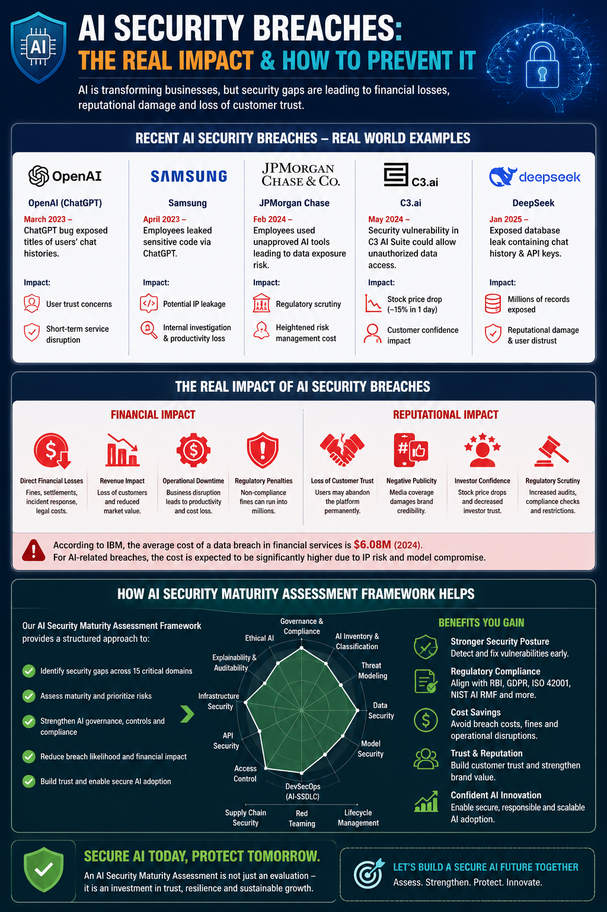

Artificial Intelligence is rapidly transforming industries including BFSI, healthcare, retail, manufacturing, and government sectors. However, the rapid adoption of AI technologies has also introduced new cyber risks, governance gaps, and regulatory challenges. AI security breaches are now causing significant financial losses, reputational damage, customer distrust, and operational disruption worldwide.

Recent AI-related incidents demonstrate how security gaps in AI systems can expose organizations to major business risks. AI security is no longer just a technical concern — it is now a boardroom-level business risk.
| Organization | Incident | Impact |
|---|---|---|
| OpenAI | Chat history exposure due to software bug | Customer trust concerns and data privacy impact |
| Samsung | Employees leaked confidential source code into ChatGPT | Potential intellectual property leakage |
| JPMorgan Chase | Restrictions imposed on unauthorized AI tool usage | Regulatory and governance concerns |
| C3.ai | Security vulnerability impacting data access | Market and reputational impact |
An AI Security Maturity Assessment Framework provides organizations with a structured and measurable approach to identify, assess, and improve AI security posture across the enterprise.
Strengthen AI governance practices and align with NIST AI RMF, ISO 42001, GDPR, RBI, and industry regulations.
Identify hidden AI risks across models, APIs, infrastructure, data pipelines, and third-party integrations.
Improve monitoring, threat detection, incident response, and AI operational stability.
Enable scalable and trusted AI transformation while minimizing business and regulatory risks.
Immediate visibility into AI risks, governance gaps, and compliance readiness.
Reduced breach likelihood, improved operational resilience, and enhanced AI governance maturity.
Trusted AI adoption, scalable AI innovation, improved customer confidence, and stronger market positioning.